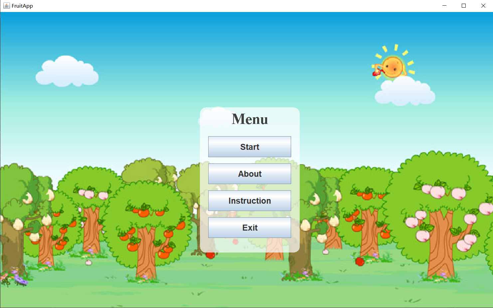
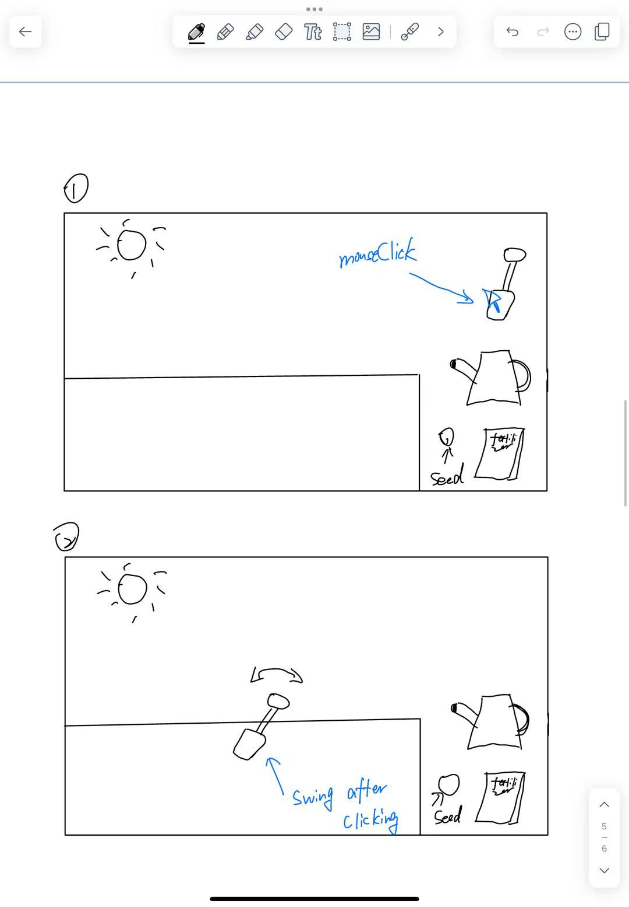
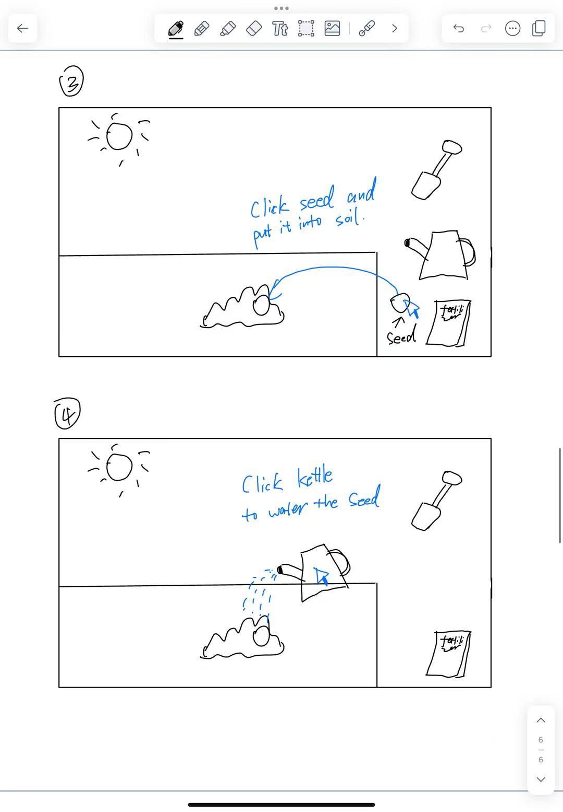
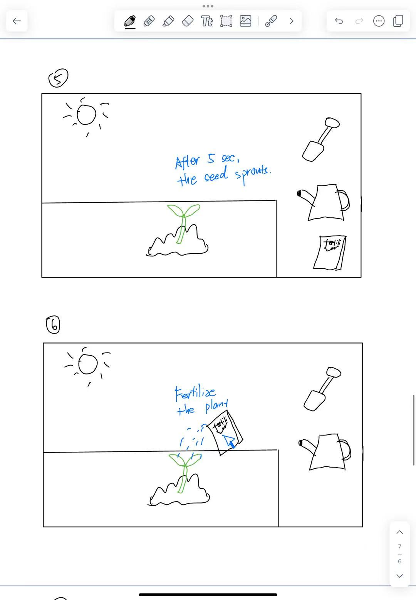
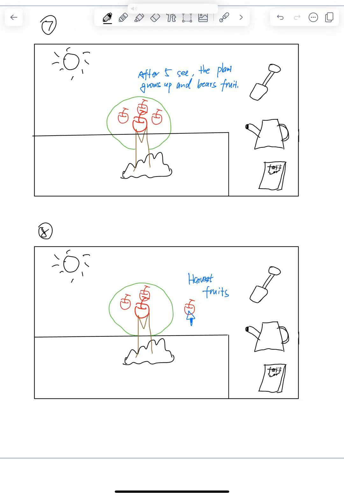
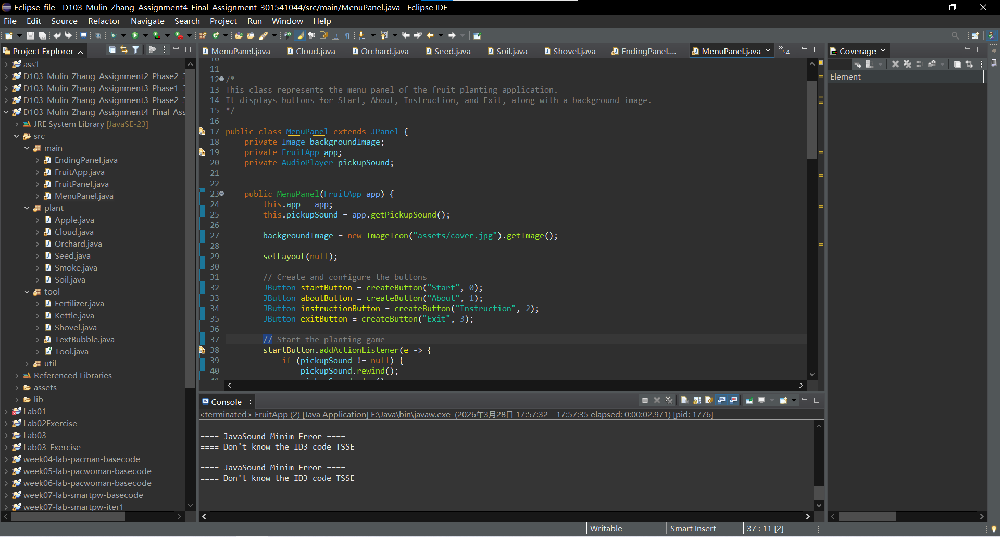
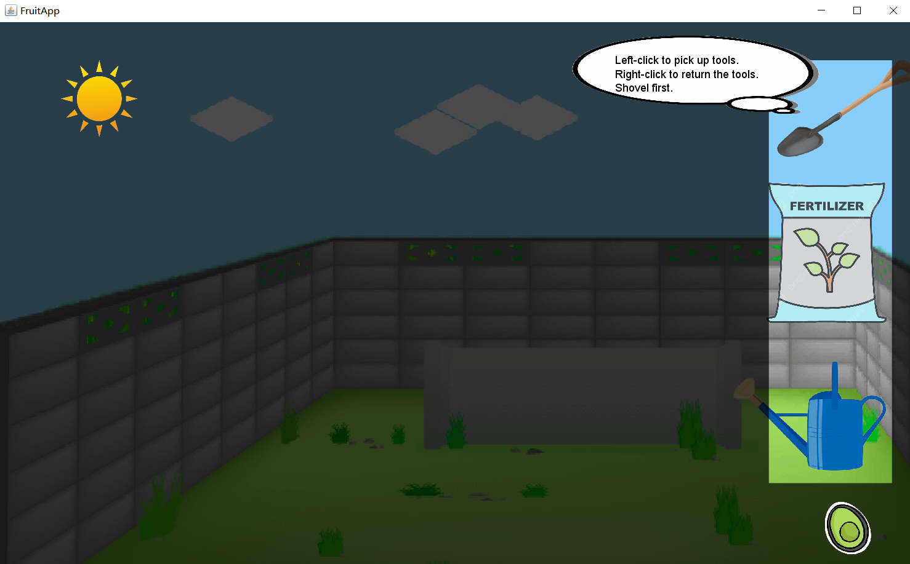
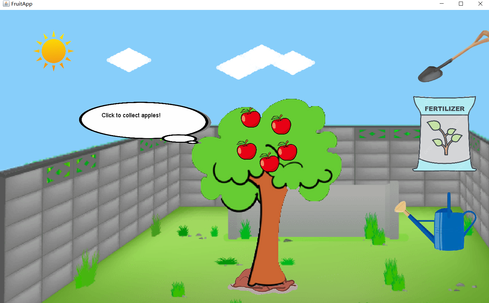

Interactive Orchard Visual Design
Interactive Visual Design • Eclipse

Overview
This project is an interactive visual design created in Eclipse. It explores how different elements can respond to user input and generate visual changes through interaction. Using an orchard theme, the project allows the user to trigger a sequence of actions with different tools and objects, creating a visually guided experience from digging and planting to growth and harvest.
Process
The project began with planning how different visual elements would interact with one another. In the proposal stage, I identified the main objects in the scene, including the shovel, seed, kettle, fertilizer, plant, and orchard background. Each element was given a specific role so that the project could function as an interactive visual system rather than only a static illustration.

After defining the objects, I created a storyboard to organize the interaction flow. The sequence starts with selecting the shovel and digging the soil, then placing the seed into the ground, watering it, waiting for the sprout to appear, applying fertilizer, and finally allowing the plant to grow fruit. This process helped me think about how each user action would produce a visible response on the screen.



In the coding stage, I translated these planned interactions into working behaviors in Eclipse. I first implemented the shovel so that it could be selected, follow the mouse, rotate to create a digging effect, and then return to its original position. From there, I extended the project by connecting later actions such as planting, watering, growth, and harvesting. Several parts of the project were revised during testing so that the order of actions, timing, and visual feedback would feel clearer and more consistent.

Challenges
One of the main challenges was making the interaction sequence clear to the user. Because the project depends on several actions happening in order, I had to carefully control when each element could respond. Digging needed to happen before planting, watering needed to happen before growth, and fertilizing needed to happen at the correct stage. This required thinking carefully about state changes and how to visually communicate progress.
Another challenge was turning storyboard ideas into coded visual interaction. Actions that looked simple in sketches, such as selecting tools or moving objects, required more detailed logic in Eclipse to feel responsive and understandable. I had to test and revise how elements followed the mouse, how clicks triggered visual changes, and how plant growth was shown over time.



Design Decisions
The project was designed around clear visual feedback. Each object has a distinct role, and every interaction creates a noticeable change in the scene. The digging animation, seed placement, watering action, sprouting plant, and fruit growth all help the user understand what is happening and what should happen next.
I also chose to keep the interaction structure simple and readable. By limiting the number of elements on screen and giving each one a specific purpose, the project remains easy to follow while still demonstrating layered interaction between visual components.
Reflection
This project helped me better understand how interactive visual systems are built from connected actions, timing, and feedback. I learned that planning the flow of interaction through object definitions and storyboards makes the coding process more manageable and improves the clarity of the final experience.
If I continue improving this project, I would add smoother transitions, stronger visual polish, and more refined feedback for each interaction. This project reflects my interest in interactive visual design and demonstrates my ability to combine planning, coding, and visual storytelling in one piece.